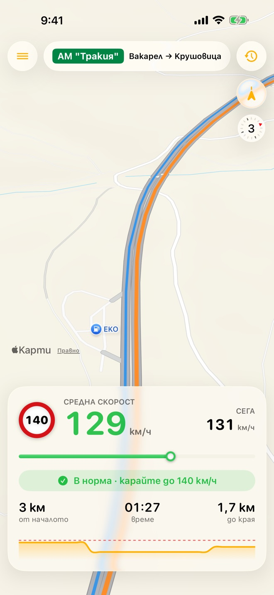
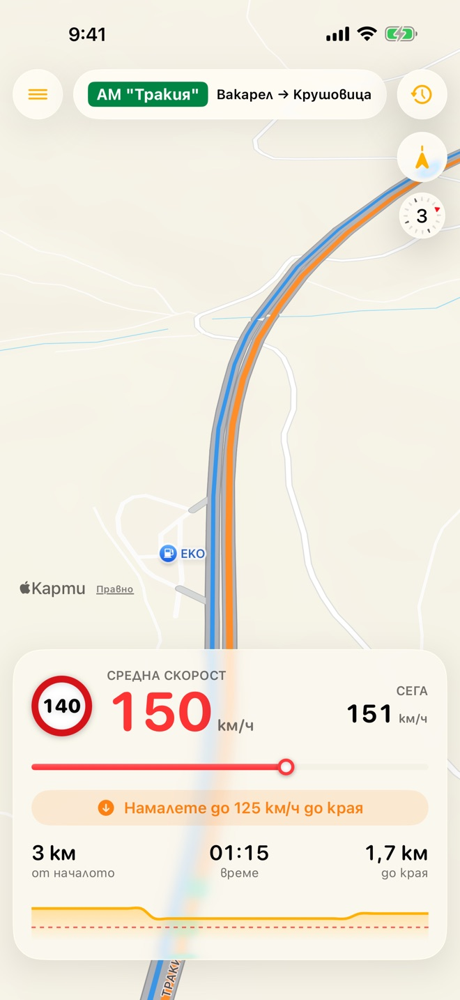
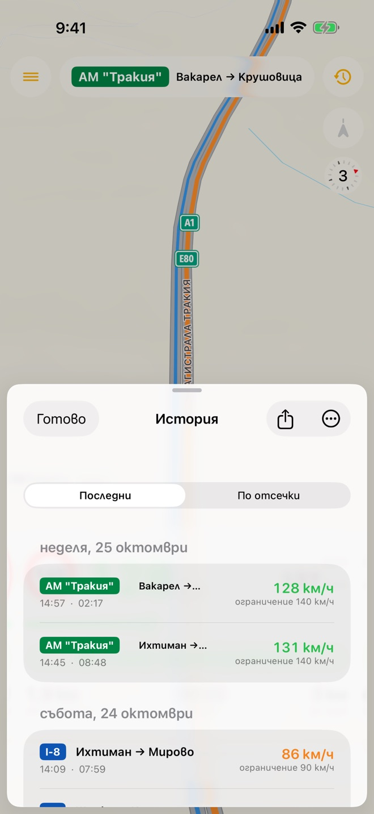
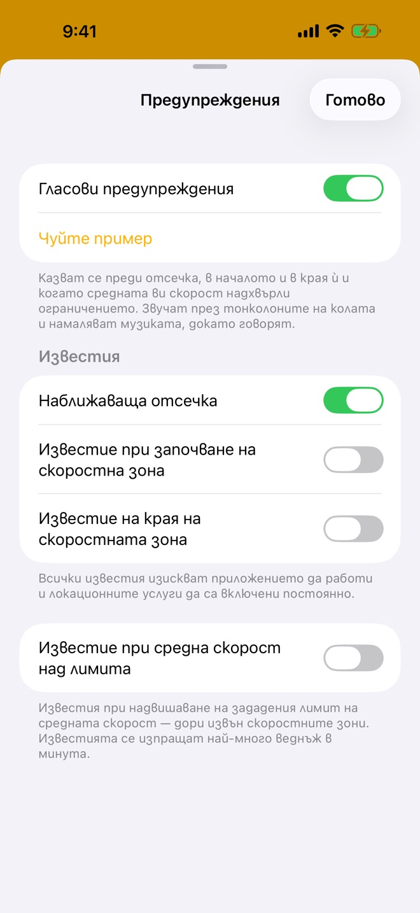

Камери БГ / Kameri BG
Бъдете информирани за ограничението на всеки участък по магистралите в България и минавайте през камерите за средна скорост спокойно.

Просто, надеждно, без следене
Камерите за средна скорост измерват скоростта ви по целия участък, а не в една точка. Камери БГ ви показва всичко нужно по време на цялото пътуване.
Участъкът и безопасната скорост
Вижте ограничението в участъка и с каква точно скорост да карате, за да излезете от него в нормата.
CarPlay
Текуща и средна скорост, близки участъци и история – директно на екрана в колата.
Гласови известия на български
Глас ви предупреждава преди всеки участък, в началото и в края му, както и когато средната ви скорост надвиши ограничението.
Siri и Shortcuts
Попитайте за средната си скорост или колко остава до края на участъка, без да пипате телефона.
Офлайн и без следене
Работи без интернет. Не събира никакви данни, а историята ви остава само на телефона.
Безплатно
Изтеглянето от App Store е безплатно. Ако искате CarPlay, го отключвате с еднократна покупка.
Вижте приложението в действие
Ограничението, средната ви скорост и колко бързо да карате до края на участъка – с един поглед.




Средната скорост на заключения екран
Следете средната си скорост и безопасната скорост до края на участъка на заключения екран и в Dynamic Island, без да отваряте приложението.

Новини
Новини за приложението и камерите за средна скорост в България.
Камери БГ 2.0 – CarPlay и още много нови функции
Безопасна скорост до края на участъка, гласови известия на български, Siri и нова карта.
Камери за средна скорост от 5 септември – списък с отсечките
Къде работят камерите по АМ „Тракия“ и Северната скоростна тангента.
Ново приложение следи средната ви скорост в реално време
Какво представлява Камери БГ и как помага да избегнете глоби.
Свържете се с нас
Забелязали сте грешно ограничение, имате идея или нужда от помощ? Пишете ни – ще се радваме.
Изпратете ни имейл